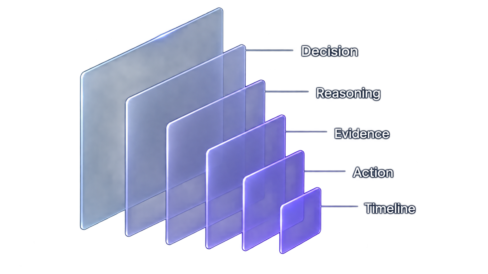

01
THE
CHALLENGE
An unfamiliar product needs to be understood first.
TeamFlow isn't another chat tool or project management app. It's a decision-context layer, which is a new and less familiar category. The challenge was to design a marketing website that could quickly make the concept clear, relevant and valuable to the right audience.
